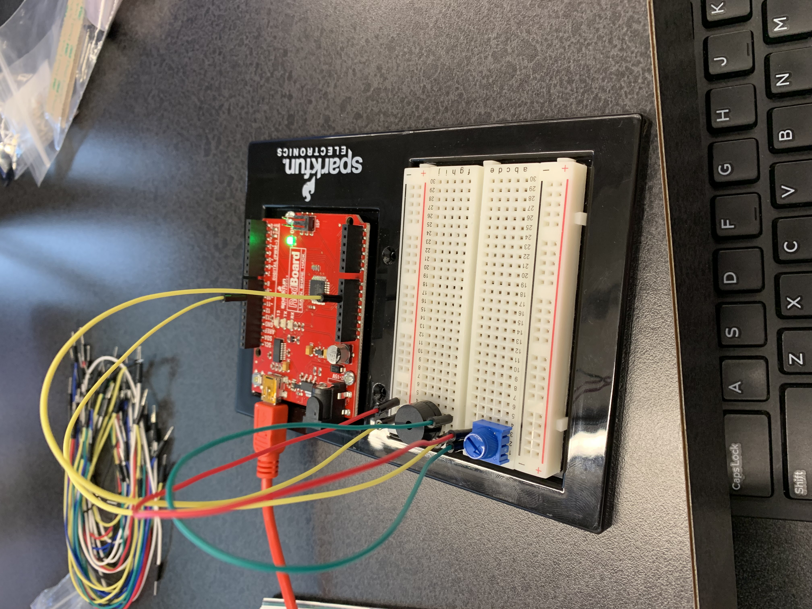
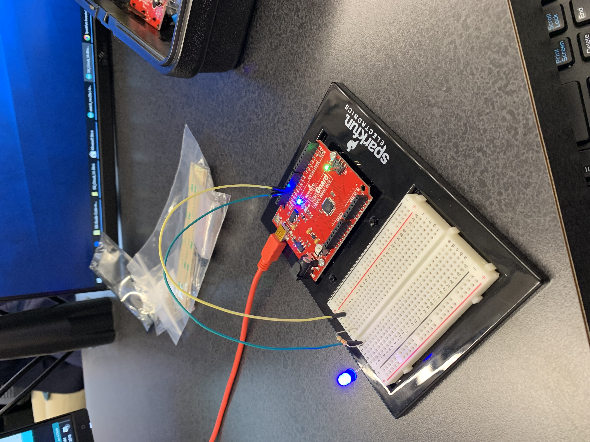

Wiggam Week 9: Arduino
In this week we worked with the Arduino board. Arduino was a teacher that wanted to give his students a better hands-on learning
experience. He created this board and soon it became an item that gave everyone an oppurtunity to work with circuits, breadboards, and motherbiards.
Once we got our Arduino kit we were assigned with the usual task. We had to build and complete the 5 different main companents of the Arduino board.

